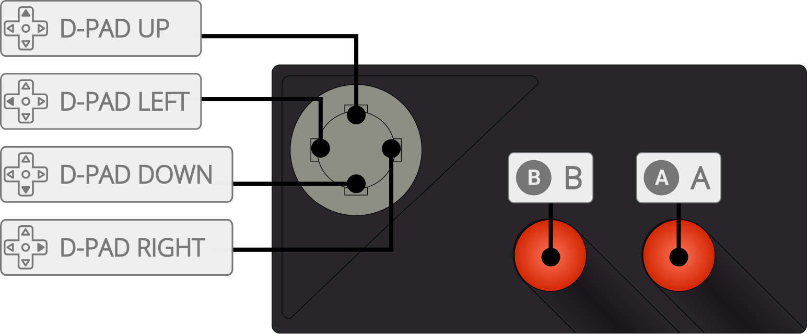

ProSystem is an Atari 7800 emulator.
The ProSystem core has been authored by
The ProSystem core is licensed under
A summary of the licenses behind RetroArch and its cores can be found here.
Content that can be loaded by the ProSystem core have the following file extensions:
RetroArch database(s) that are associated with the ProSystem core:
Required or optional firmware files go in the frontend's system directory.
| Filename | Description | md5sum |
|---|---|---|
| 7800 BIOS (U).rom | 7800 BIOS - Optional | 0763f1ffb006ddbe32e52d497ee848ae |
Frontend-level settings or features that the ProSystem core respects.
| Feature | Supported |
|---|---|
| Restart | ✔ |
| Screenshots | ✔ |
| Saves | ✕ |
| States | ✔ |
| Rewind | ✔ |
| Netplay | ✕ |
| Core Options | ✕ |
| RetroAchievements | ✔ |
| RetroArch Cheats | ✕ |
| Native Cheats | ✕ |
| Controls | ✔ |
| Remapping | ✔ |
| Multi-Mouse | ✕ |
| Rumble | ✕ |
| Sensors | ✕ |
| Camera | ✕ |
| Location | ✕ |
| Subsystem | ✕ |
| Softpatching | ✕ |
| Disk Control | ✕ |
| Username | ✕ |
| Language | ✕ |
| Crop Overscan | ✕ |
| LEDs | ✕ |
The ProSystem core's internal core name is 'ProSystem'
The ProSystem core saves/loads to/from these directories.
Frontend's State directory
The ProSystem core supports the following device type(s) in the controls menu, bolded device types are the default for the specified user(s):

| User 1 Remap descriptors | RetroPad Inputs |
|---|---|
| B | |
| Console Select | |
| Console Pause | |
| Up | |
| Down | |
| Left | |
| Right | |
| 2 | |
| Console Reset | |
| Left Difficulty | |
| Right Difficulty | |
| User 2 Remap descriptors | RetroPad Inputs |
|---|---|
| 1 | |
| Up | |
| Down | |
| Left | |
| Right | |
| 2 | |